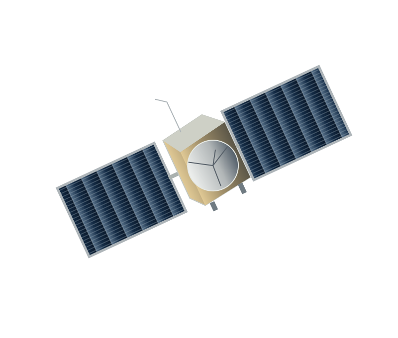
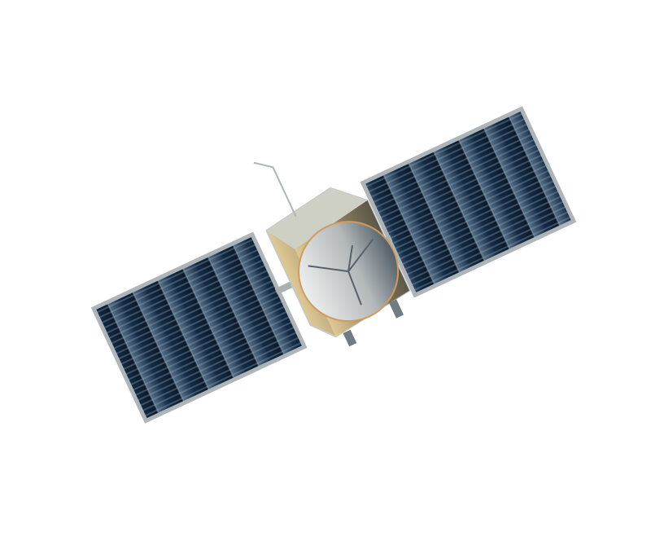

When an aerospace design changes, the regulatory record must keep up.
We trace proposed changes against the approved baseline and prepare the evidence your reviewers need.
01The gap
The drawing changed. Did the regulatory record change with it?
Engineering records show what has changed in the design. Regulatory records may still describe an earlier configuration. We establish the technical difference, identify the records that depend on it and prepare the questions that require review.
Engineering record
Regulatory record
Records still describe Rev A
Illustrative record types — not a customer configuration.
02Capabilities
Four ways to turn technical changes into review-ready evidence.
Each service begins with controlled engineering records and ends with a structured deliverable that authorised reviewers can examine.

NASA Juno spacecraft model · Credit: NASA VTAD · Engineering reference only, not a Mission Beacon project
-
01
Engineering Change Regulatory Impact
Compare a proposed revision with the approved baseline and identify potentially affected regulatory records.
DeliverableRegulatory Impact Assessment Digest
-
02
Export Jurisdiction and Classification
Organise technical characteristics and source evidence for authorised classification review against candidate USML and CCL criteria.
DeliverableClassification Memorandum
-
03
Pre-Filing Regulatory Package
Validate technical parameters, units and revision status before a filing.
DeliverablePre-Filing Validation Package
-
04
Milestone Compliance Readiness
Identify unresolved technical-regulatory questions before a programme review.
DeliverableReadiness Audit and Risk Heatmap
Supporting scopes Technical Data Jurisdiction Analysis · Regulatory Risk Retainer and CCB Support
03Starting point
Start with one change package, not a platform replacement.
An Engineering Change Proposal, bill-of-materials revision, software update or supplier substitution provides a defined starting point. The review follows the approved source, the proposed change and the evidence needed for the next decision.
- Engineering Change Proposal
- BOM revision
- Software update
- Supplier substitution
Same assembly. One defined change.
04Illustrative scenario
A communications update is more than a part swap.
Consider a proposed change to a transmitter, antenna or operating mode. Centre frequency, bandwidth, power, gain and software-controlled behaviour may need to be compared with the current technical baseline. The question is which existing classification, spectrum or filing records require a fresh review.
| Parameter | Baseline · Rev A | Proposed · Rev B | Records that may depend on it |
|---|---|---|---|
| Centre frequency | Approved ICD | ECP redline | Spectrum filingLicence condition |
| Bandwidth | Approved ICD | ECP redline | Spectrum filing |
| Transmit power | Subsystem specification | Supplier datasheet | Licence conditionClassification record |
| Antenna gain | Antenna drawing | Revised drawing | Spectrum filingClassification record |
| Operating modes | Software config baseline | Software update notes | Classification record |
Illustrative scenario — not a customer case or regulatory determination.
05The deliverable
A change board needs an evidence record.
The Regulatory Impact Assessment Digest brings together the changed technical characteristic, source revision, relevant record, responsible reviewer and open action. It provides a structured basis for discussion without pretending that a technical assessment is a formal agency ruling.
Regulatory Impact Assessment Digest
Communications assembly change

Illustrative demo data · not a regulatory determination
06Who it serves
One change. Different decisions.
07Method
From source evidence to an accountable review decision.
- 01
Establish the approved baseline.
We confirm the controlled drawings, BOM, requirements, PLM export and authoritative revision.
Source register - 02
Capture the proposed change.
We examine the ECP or ECN, redlines, substituted parts and relevant software or interface changes.
Change register - 03
Compare technical characteristics.
Every difference in frequency, bandwidth, gain, power, optical characteristics or operating modes is tied to a source and unit.
Comparison table - 04
Identify regulatory review questions.
Changed facts are considered alongside existing classification records, licence conditions, permits and filing evidence.
Question set - 05
Prepare the evidence package.
Findings are organised into the agreed digest, memorandum, validation package or audit, with open questions visible.
Evidence package - 06
Record decisions and actions.
The responsible reviewer records each disposition. Open actions stay linked to the controlled baseline.
Decision log
Technical evidence first. Human authority always.
08Principles
Mission Beacon works from controlled source material, preserves revision references and makes unanswered questions visible. Legal interpretation, formal classification and regulatory filings remain with the authorised parties.
What we prepare
- Source registers tied to authoritative revisions
- Technical deltas with units and provenance
- Questions that require authorised review
- Open actions linked to the controlled baseline
What stays with authorised parties
- Legal interpretation
- Formal classification decisions
- Licensing submissions and regulatory filings
- Agency approvals
09Engagement
Fit the engagement to the decision.
Choose a focused assessment for one change, a recurring retainer for ongoing CCB and classification support, or an embedded partnership for broader programme work.
- Focused
Regulatory Intelligence Assessment
A bounded review of one change, technical package, filing question or upcoming milestone.
- Recurring
CCB Change Review and Classification Retainer
Recurring technical evidence reviews for configuration control and export compliance teams.
- Embedded
Aerospace Intelligence Partnership
Longer-term advisory support across programme changes, reviews and regulatory questions.
10Contact
Bring the change. Establish the decision path.
Tell us which engineering decision, regulatory filing or programme review is approaching. A high-level, non-sensitive description is enough to begin.